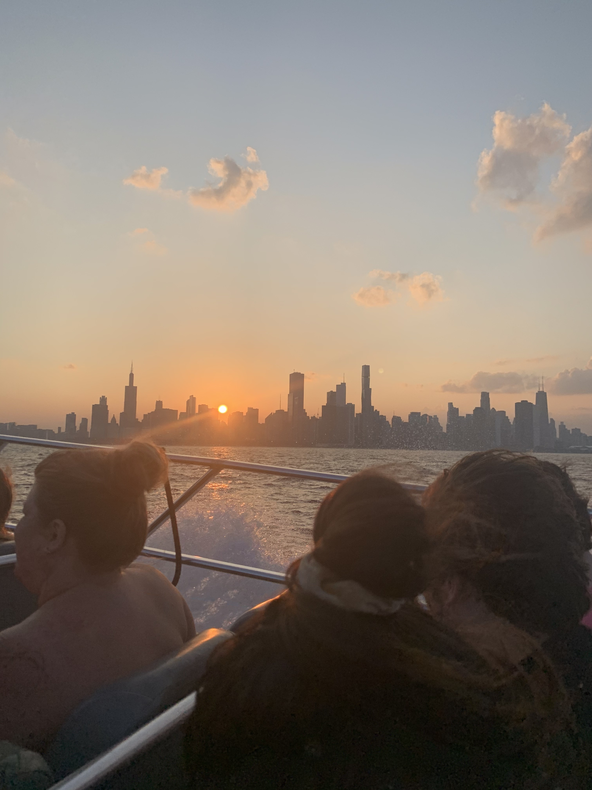
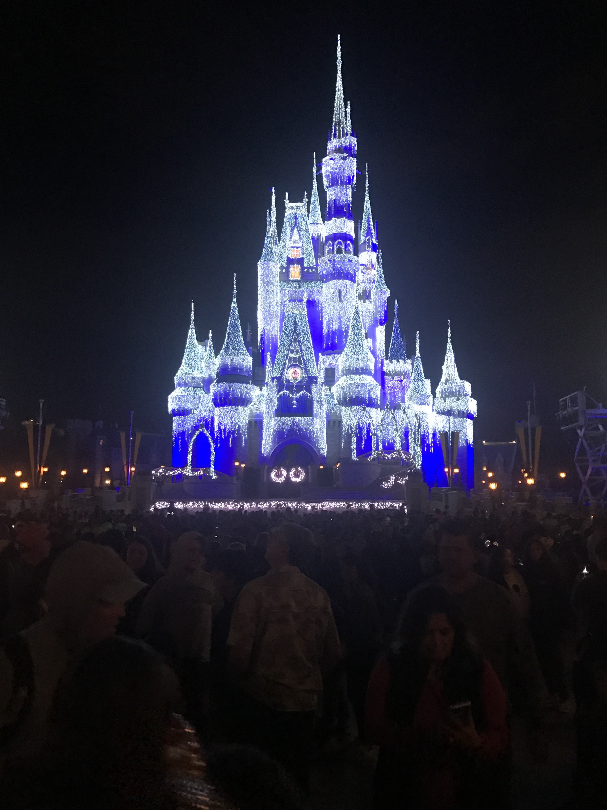
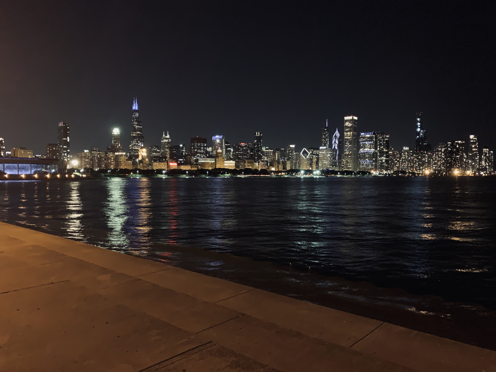
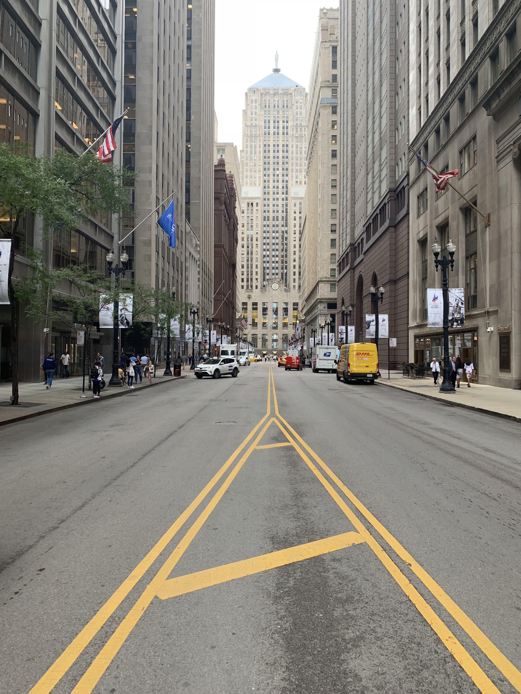
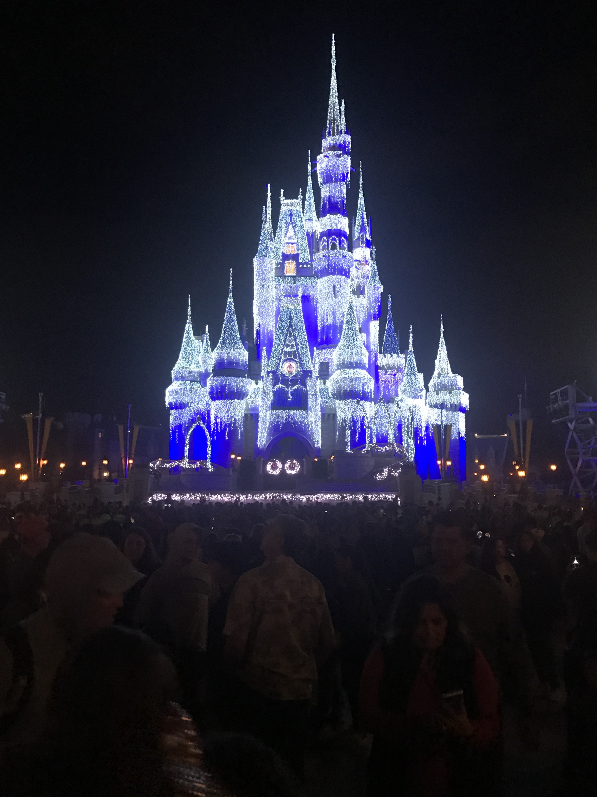
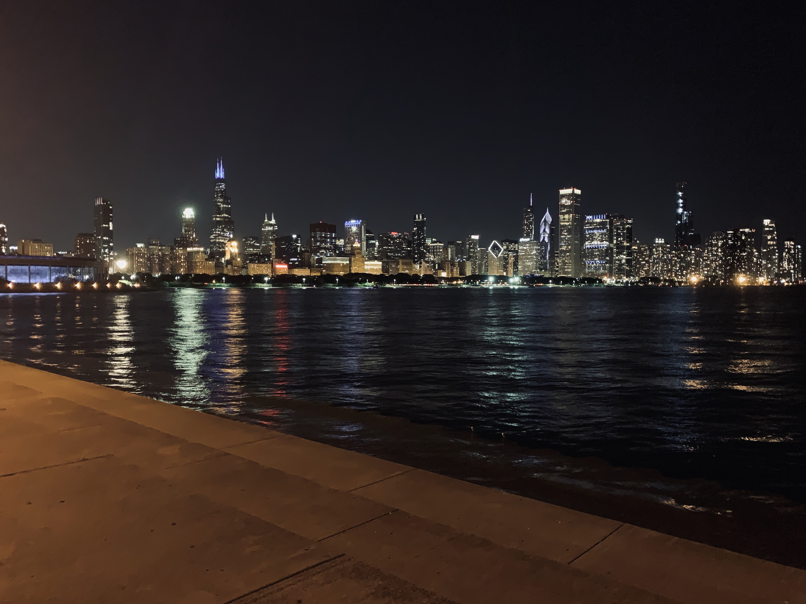
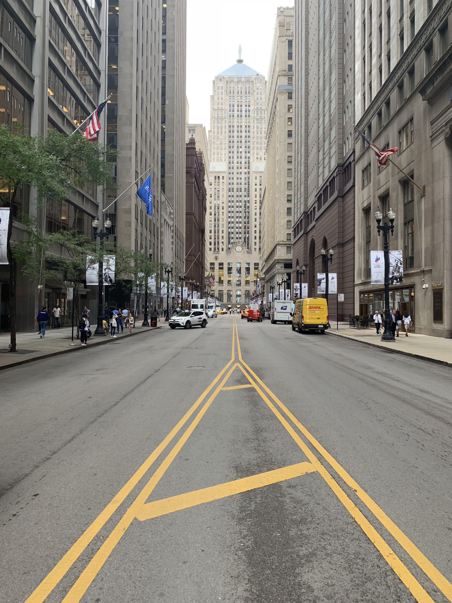
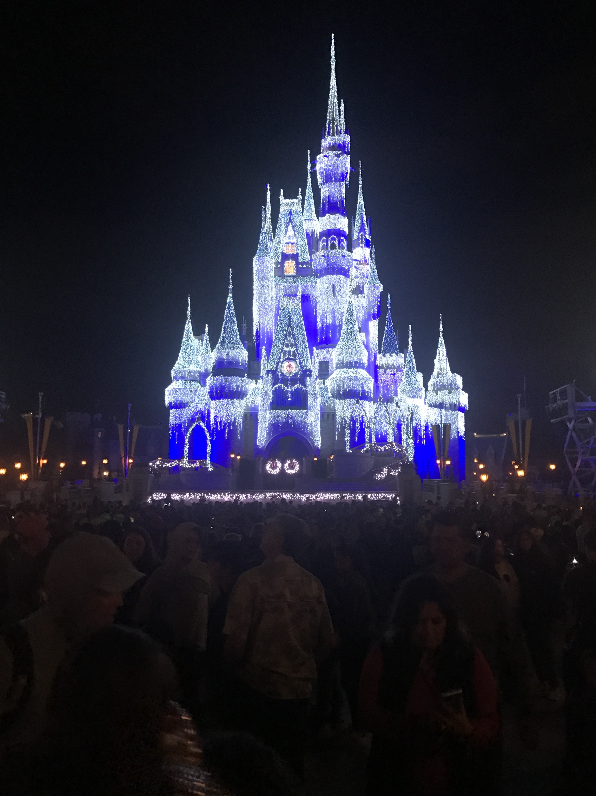
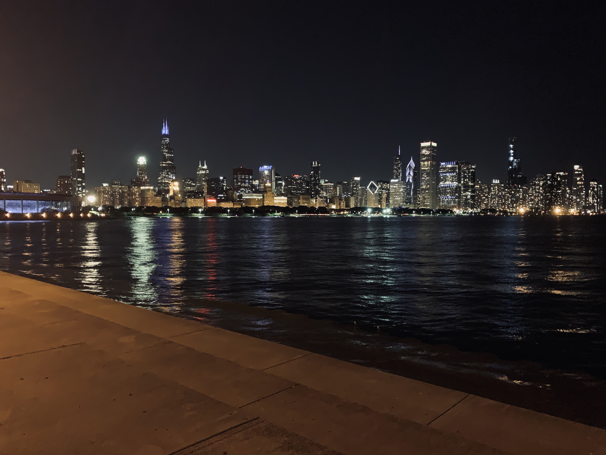
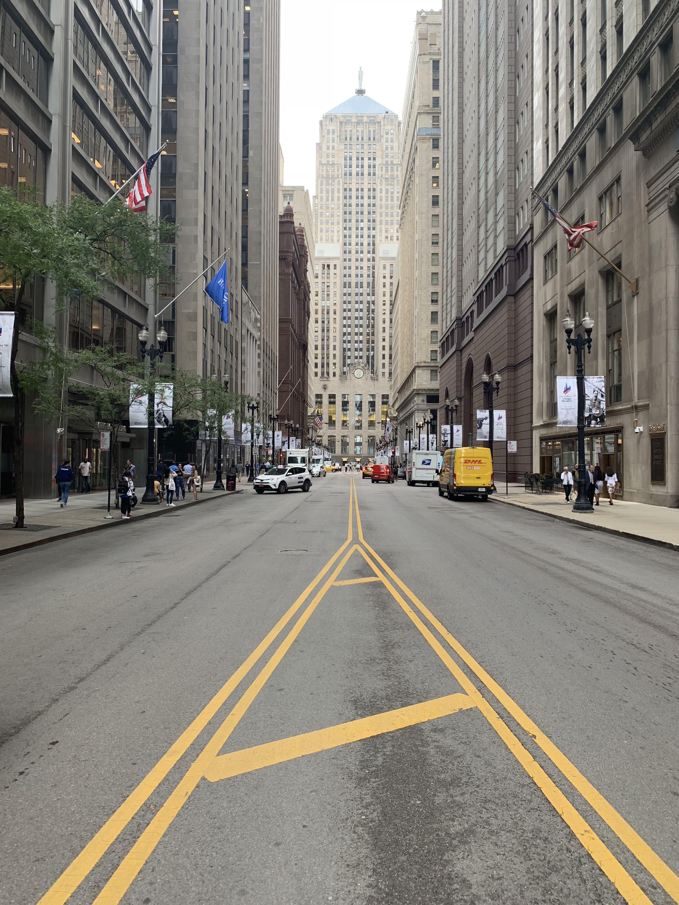

Before I was an Applied Analytics major, I was an Architecture major. My interest in photography piqued through traveling to different sites around Chicago and taking pictures. Some neighborhoods I have travelled to include Pullman, South Shore, Gold Coast, Breidgeport, Wicker Park, Goose Island, and the Loop.




Sports
When I was younger, I enjoyed watching any sport and playing soccer. The sports I keep up with the most today are football, basketball, baseball, college football, and soccer.
My favorite teams are the Chicago Bears, the Chicago Bulls, the Chicago White Sox, Notre Dame, and Manchester United.
Video Editing
Before I made the decision to switch majors, I was assigned to create a video on a building. Using Adobe Premiere Pro, I made a video on BLOX, a building located in Copenhagen, Denmark.
The audio is on the louder side so be sure to keep the volume low!
 




